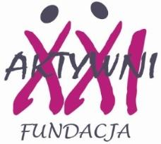

Fundacja "Aktywni XXI"
Jelenia Góra, Poland
Fundacja “Aktywni XXI” is a non-governmental, non-profit organisation based in Jelenia Góra, in the Lower Silesia region (Dolnośląskie). Founded on 6 December 2010, it has worked in adult education for more than ten years, promoting lifelong learning and active participation in social life.
- Erasmus+ code (OID)
- E10078093
- Type of organisation
- Non-profit foundation
- Website
- www.aktywni21.org.pl
Read moreShow less
The Foundation was set up to support the creative development of children, young people and adults, with a special focus on older people. It runs the Jelenia Góra Academy of the Third Age, which offers lectures, meetings with interesting people and trips.
Older people are the main target group of the Foundation's educational activities, which also include intergenerational projects. For several years “Aktywni XXI” has worked with the Jelenia Góra branch of the OHP (Ochotnicze Hufce Pracy, Voluntary Labour Corps), organising cultural workshops, Christmas meetings and social initiatives.
The Foundation's mission is to spread the idea of lifelong learning among older people. This called for an attractive educational offer that would draw in new participants and involve them actively. Thanks to the trainers and educators who work with the Foundation, new courses have been created, widening the range of subjects on offer.
The trainers' participation in the course “Theatre in Education: a Holistic Approach to Teaching through Drama Techniques” led to theatre workshops, which are very popular and have been held regularly since February 2022, and to the partnership project “Using Drama Techniques in Adult Education”. Through the project “Social Skills – New Challenges” the trainers attended three courses on social skills; this led to the “Active Citizen” workshops and the courses “A Senior's Life in Harmony Is a Miracle”, on dealing with difficult situations, building relationships and communicating with others. The trainers also designed a board game to develop social and civic skills, which is used in many of the Foundation's activities.
The new teaching methods have increased participation in the Jelenia Góra Academy of the Third Age: the new programmes and more attractive activities have drawn more senior students, as shown by the rise in enrolments in the following semesters.